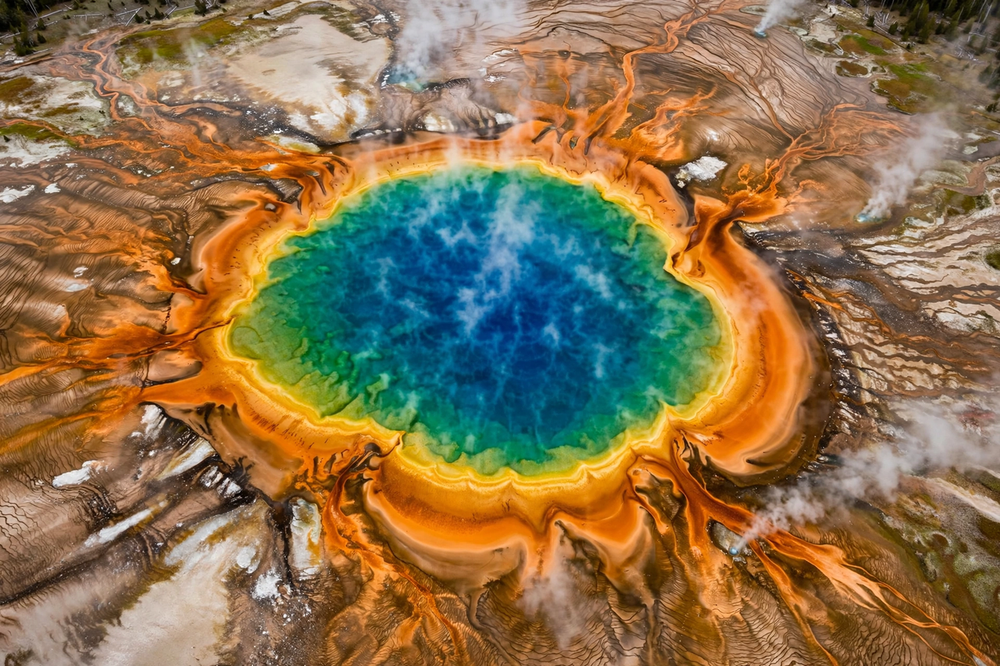

Yellowstone National Park
From Wikipedia, the free encyclopedia

[Image: Grand Prismatic Spring, Yellowstone National Park, from above]Grand Prismatic Spring, Yellowstone National Park, from above
Yellowstone National Park is a national park in the western United States, mostly in Wyoming, established by Congress on 1 March 1872 — generally regarded as the world's first national park. It sits atop the Yellowstone Caldera, one of Earth's largest active volcanic systems, whose last super-eruption, 640,000 years ago, was a thousand times larger than Mount St. Helens in 1980.
Geothermal wonders
Yellowstone holds more than ten thousand hydrothermal features — geysers, hot springs, mudpots and fumaroles — over half the world's total. Old Faithful erupts with famous regularity; the Grand Prismatic Spring blazes with microbial colour; Norris Geyser Basin is the park's hottest and oldest thermal area. The heat source is a mantle hotspot over which North America drifts, leaving a track of calderas across the Snake River Plain.
Wildlife and legacy
The Greater Yellowstone Ecosystem is one of the last large intact temperate ecosystems: free-ranging bison (the last wild herd's descendants), elk, grizzly bears, and wolves — reintroduced in 1995 to continent-wide debate and documented trophic effects. The park's founding invented the very idea of national parks, exported worldwide and embodied in the work of conservation (see conservation biology), and its fires of 1988 reshaped fire ecology. Supervised today by geologists who monitor the restless caldera, Yellowstone gets over four million visitors a year.